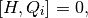
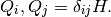
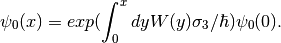

Super-Symmetric Quantum Mechanics¶
The idea of supersymmetric quantum mechanics is to introduce a hamiltonian related to supercharge, which is defined through

for all charges  and
and

In the 2 charge case, I can define two charges,

Harmonic Oscillators
The harmonic oscillators can be solved using ladder operators,

This is a hint why we define the charges in that way.
With these charges, we can solve the state that is annihlated by  .
.

which is the ground state.
The result is
